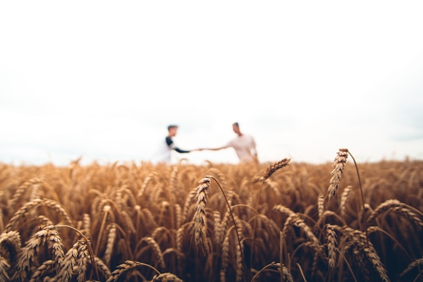
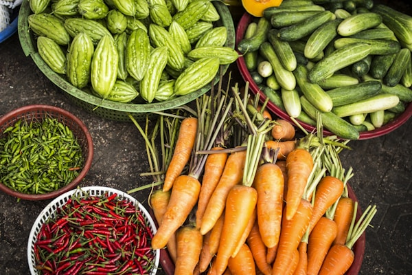

Sustentabilidade
Preservamos solo, água e biodiversidade com práticas conscientes.
Sobre a AgroVerde
Unimos tradição, tecnologia e sustentabilidade para cultivar com qualidade.

Quem somos
A AgroVerde começou com o objetivo de produzir alimentos saudáveis, respeitando a natureza e valorizando o trabalho rural.
Hoje, seguimos cultivando frutas, verduras e legumes com cuidado em cada etapa: preparo do solo, plantio, colheita, seleção e entrega.
Nossos princípios
Preservamos solo, água e biodiversidade com práticas conscientes.
Trabalhamos com transparência com clientes, parceiros e produtores.
Selecionamos alimentos frescos com alto padrão de cuidado.
Aplicamos tecnologia para tornar a produção mais limpa e eficiente.
Nossa missão
Acreditamos que a agricultura sustentável é essencial para garantir qualidade de vida hoje e preservar recursos para as próximas gerações.
Fale conosco